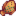

Isla Jengibre
| Isla Jengibre | |
 | |
 | |
| Residentes: | |
La Isla Jengibre se encuentra dentro del archipiélago de las Islas Helecho y es la única isla del archipiélago que el jugador puede visitar. Se puede acceder a ella después de reparar el barco en la trastienda de la Tienda de pesca de Willy. Comprar un billete para montar en la barca cuesta  1000o, incluido el viaje de regreso, y es la principal forma de acceder a la isla cuando la tienda está abierta.
1000o, incluido el viaje de regreso, y es la principal forma de acceder a la isla cuando la tienda está abierta.
La primera vez que el jugador se sube al barco, se desencadena una escena que muestra la costa de la región, incluidas algunas islas que pueden verse en el camino. La siguiente vez, sólo se muestra la animación de Willy subiendo al barco y empezando a dirigirlo. El barco llega a un muelle en la isla, con un único camino que conduce al interior al principio, ya que el resto de la isla está cerrado. La isla está habitada en gran parte por loros, a los que se pueden ofrecer Nueces de Oro para desbloquear zonas o características adicionales. La Isla Jengibre es bastante única entre las zonas de Stardew Valley visitables por el jugador, ya que, al igual que en el Invernadero, la estación actual no afecta a los cultivos que se pueden plantar y cultivar en la isla, ni tampoco a los peces que se pueden pescar en ella.
El jugador puede volver a Stardew Valley en cualquier momento de forma gratuita entrando en el barco de la playa sur. Normalmente llegará dentro de la Tienda de Pesca, excepto en días de festival en los que el camino de vuelta a La Granja está bloqueado, en cuyo caso el jugador será depositado en la Parada de autobús en su lugar. Si el festival se celebra en La playa, el jugador será depositado en el puente que lleva a la playa al sur de Pueblo Pelícano.
Sur de la isla
Esta es la zona en la que el jugador desembarca por primera vez. Contiene el muelle, una pequeña playa con las ruinas de un edificio y tres caminos que llevan a las otras zonas de la isla: Este, Norte y Oeste. Además, en esta parte de la isla se encuentra el punto de teletransporte para un Tótem de teletransporte: Isla u Obelisco de la Isla. Teletransportarse a la isla es la única manera de acceder a ella cuando la tienda de Willy está cerrada.
Al principio, sólo está disponible el camino a la Isla Este, ya que dos grandes tortugas bloquean los caminos a las Islas Norte y Oeste. El jugador debe seguir a Leo, que aparece y corre hacia la jungla de la Isla Este. Las interacciones en la cabaña de Leo eliminarán a la tortuga que bloquea la salida norte, y al volver a la playa aparece un Duende de magma que guía al jugador hacia el norte, al Volcán. La tortuga que bloquea el camino a la Isla Oeste se puede eliminar pagando al loro cercano 10 Nueces de Oro.
Balneario de la playa
Una vez reparado la Casa de campo al oeste de la Isla, las ruinas pueden convertirse en un balneario por 20 Nueces de oro. A partir de ese momento, un subgrupo aleatorio de aldeanos de Pueblo Pelícano llegará a las 11:00 de la mañana y se marchará a las 18:00 todos los días sin lluvia que no sean días de festival. El jugador puede abrir/cerrar el balneario para el día siguiente con la palanca situada entre las dos puertas del vestuario.
Después de abrir el balneario de la playa, Gus tendrá un bar los días en que lo visite.
| Imagen | Nombre | Descripcion | Precio |
|---|---|---|---|
| Piña Colada | Bebe con moderación. | ||
| Cerveza | Bebe con moderación. | ||
| Cerveza pálida | Bebe con moderación. | ||
| Hidromiel | Una bebida fermentada hecha con miel. Bebe con moderación. | ||
| Dulce de grosellas | Lo suficientemente dulce para disfrazar el amargor de la fruta. | ||
| Vino de Mango | Bebe con moderación. | ||
| Curry tropical (Receta) | Receta para cocinar «Curry tropical». |
Sureste de la isla
Esta zona se desbloquea construyendo el Balneario de la playa, que despeja los escombros al este del muelle. Contiene una poza de marea en forma de estrella, una gran roca mar adentro y una cueva de piratas oculta.
Cueva pirata
Se puede acceder a la Cueva Pirata en el lado este de la Isla Sureste a través de una entrada oculta al este de la piscina en forma de estrella. El jugador puede entrar en la cueva en cualquier momento para pescar en el estanque que hay al sureste o en los pequeños estanques que hay cerca de su entrada. Estos son los únicos lugares del juego donde se puede pescar la Mantarraya. Además de los peces que se muestran en la sección de Pesca más abajo, el jugador puede capturar una  Estatua del Goloso, que aparece inicialmente como una caja de regalo cuando se captura.
Estatua del Goloso, que aparece inicialmente como una caja de regalo cuando se captura.
Los piratas visitan la cueva después de las 20:00 los días pares no lluviosos de la estación. Si el jugador está dentro de la cueva antes de las 20:00 en un día en que los piratas vienen de visita, el jugador es automáticamente sacado de la cueva y colocado fuera de su entrada, terminando cualquier actividad actual allí. Sin embargo, el jugador puede volver a entrar en la cueva. Mientras los piratas están de visita, el jugador puede jugar a los Dardos para ganar Nueces de oro. (No hay recompensas después de las tres primeras veces que el jugador gana una partida.) También hay un bar en el que cualquier jugador que lleve un Sombrero de pirata, un Parche o un Sombrero de pirata de lujo recibe Hidromiel una vez al día.
En Invierno, en el estanque más al sur se pueden ver medusas similares a las que aparecen en el festival Danza de las medusas lunares, pero no se pueden pescar.
Sirena

Los días de lluvia aparecerá una Sirena en la gran roca de la orilla. Si el jugador coloca Bloques Flauta y los afina para tocar la Canción de sirena, ella le recompensará con 5 Nueces de oro.
Para tocar la canción de la Sirena, coloca Bloques flauta encima o debajo de cada conjunto de piedras de la orilla, luego afina cada bloque según la cantidad de piedras. Una piedra grande simboliza 5 notas, y una piedra pequeña simboliza 1. Después de afinar los 5 bloques, simplemente pasa por delante de cada uno de izquierda a derecha.
| Afinación de Bloques Flauta | ||||
|---|---|---|---|---|
| Bloque 1 | Bloque 2 | Bloque 3 | Bloque 4 | Bloque 5 |
 |
 |
 |
 |
 |
| 1 Click | 10 Clicks | 8 Clicks | 4 Clicks | 6 Clicks |
| o | ||||
| 2 Clicks | 11 Clicks | 9 Clicks | 5 Clicks | 7 Clicks |
Este de la isla
A esta zona se llega caminando hacia el este desde el muelle del Sur de la Isla. Contiene una jungla en la que pueden aparecer Helechos y una cabaña en la que vive un chico llamado Leo con un loro parlanchín. Este loro dará pistas al jugador sobre cuántas Nueces de oro le quedan por encontrar en las áreas de la isla. Fuera de la cabaña hay un Altar del Plátano.
- Colocar un plátano en el altar en el lado noroeste hará que aparezca un gorila y recompensará al jugador con 3 Nueces de oro.
Pájaros gema
Un camino hacia el este en la jungla conduce a un área con un santuario y varios pedestales. La entrada es un cuadrado al sur del quiosco del Loro Express y todo el camino hacia el este. Cada pedestal tiene delante una imagen tallada en piedra que corresponde a una sección de la isla. Interactuar con el santuario muestra el siguiente mensaje:
- "Cuando las nubes negras lloren, comienza tu misión
- Busca los cuatro legendarios pájaros gema
- Cada día, uno al norte, al sur, al este u oeste
- Deja sus regalos junto a mi puerta"
Cada día que llueve en la isla, aparecerá un pájaro-gema en una dirección cardinal de la Isla:
- Sur: Justo al noroeste de los muelles.
- Este: Centro del área, cerca del camino.
- Norte: Noreste del Comerciante isleño.
- Oeste: Justo al este del estanque.
Acercarse al pájaro hará que vuele, dejando una gema que coincide con el color del pájaro: (aguamarina, topacio, amatista, esmeralda, o rubí). La gema debe colocarse en el pedestal que corresponda al lugar donde se encontró el ave. La disposición de las imágenes y los pedestales se corresponde con la tradicional rosa de los vientos, con el norte en la parte superior. Cuando se han llenado los 4 pedestales, el santuario se activa y da al jugador 5 Nueces de oro.
Notas:
- El tiempo en la isla no se corresponde con el de Stardew Valley. Las previsiones meteorológicas de la televisión muestran la previsión diaria para la Isla Jengibre a partir del día siguiente a la primera visita del jugador a la isla.
- Se puede usar un Tótem de lluvia en la isla para obligar a los pájaros a aparecer.
- Los pájaros seguirán apareciendo y soltando gemas incluso después de resolver el puzzle. Sin embargo, la recompensa del acertijo solo aparece una vez por archivo guardado.
- Hay cinco tipos de pájaro gema, cada uno de los cuales deja su propio tipo de gema. De estos cinco, cuatro se seleccionan al azar y se asignan aleatoriamente a la dirección de la brújula en la que aparecerán. La selección y asignación aleatorias se realizan una vez por archivo de guardado y tienen lugar antes de que el jugador visite por primera vez la Isla Jengibre en un día lluvioso. Cada vez que ocurre ese día, cada partida tiene la misma asignación.
Norte de la isla
Esta área incluye todo lo que se alcanza caminando hacia el norte desde los muelles del Sur de la Isla.

Comerciante isleño
- Articulo principal: Comerciante isleño
El Comerciante isleño es un pájaro azul comerciante que dirige un puesto comercial al Norte de la Isla. El loro del comerciante se desbloquea construyendo la Casa de campo de la Isla. Entonces el comercio se desbloquea cuando el jugador le da al loro 10 Nueces de oro.
El comerciante tiene un stock rotativo de objetos temáticos de la isla, que no se pueden comprar con ninguna moneda, sino sólo mediante trueque a cambio de otros objetos. Los objetos de trueque se obtienen mediante la Recolección, muchos de los cuales se encuentran en la Isla Jengibre. Entre los objetos de trueque exclusivos hay muchos tipos de Muebles con temática isleña. La Alma galáctica está sujeta a ciertas restricciones de disponibilidad.
Lugar de excavación
Al oeste de la Oficina de campo de la isla hay un puente roto que los loros pueden reparar a cambio de 10 Nueces de oro. Una vez reparado, lleva al Lugar de excavación, una zona similar a la Cantera. Las Rocas, Piedras de hueso, Piedras de arcilla, y semillas de Árbol de caoba tienen una probabilidad de aparecer todos los días.
Al este de las escaleras, al norte de la excavación, está la Cueva de Setas de la Isla Jengibre. Al principio, hay una roca bloqueando la entrada, y alguien detrás de ella está pidiendo ayuda. Colocar cualquier bomba eliminará la gran roca y liberará al Profesor Caracol, lo que también desbloqueará la Oficina de campo de la isla. La cueva genera setas nuevas al azar todos los días. A diferencia de la cueva de la granja, sus setas crecen directamente en el suelo, por lo que los jugadores se benefician de las profesiones Recolector o Botánico al recogerlas.

Oficina de campo de la isla
- Articulo principal: Oficina de campo de la isla
La tienda de campaña de la Oficina de campo de la isla se encuentra en la región central al norte de la Isla, en el camino hacia el volcán. La oficina permanece vacía hasta que el Profesor Caracol es rescatado de la Cueva de Setas en el Lugar de excavación. A partir de entonces, el jugador puede donar fósiles y responder a la Encuesta de la Isla, a cambio de diversas recompensas.
Mazmorra del volcán
- Articulo principal: Mazmorra del volcán
En el extremo norte hay una mazmorra del volcán con diez niveles, ocho de los cuales se generan aleatoriamente de forma similar a la Caverna Calavera. En el quinto nivel hay una tienda, y en el décimo y último se encuentra la Forja, donde se pueden mejorar herramientas y armas usando Fragmentos de ceniza.
Para acceder a la mazmorra, se necesita una regadera para hacer un camino a través de la lava. Este camino no se mantiene entre días y debe rehacerse para volver a cruzar. Después de que el jugador llegue a la Forja y desbloquee la puerta necesaria para salir (al oeste de la Forja, al este de la zona inicial), un loro se posará cerca del río de lava ofreciéndose a desbloquear un puente permanente a cambio de 5 Nueces de oro.
El río de lava de la zona inicial puede seguirse hacia la izquierda para encontrar una salida oculta. La salida lleva al río al norte de la zona de excavación, donde el jugador puede encontrar 2 Nueces de oro.
Oeste de la isla
Esta zona incluye todo a lo que se llega caminando hacia el oeste desde los muelles del Sur de la Isla. La entrada a esta zona está bloqueada inicialmente por una tortuga dormida, que puede ser despertada dándole a un loro cercano 10 Nueces de oro. Este loro solo aparecerá después de que el primer loro de la casa de Leo haya recibido su propia Nuez de oro.
La zona está dividida de norte a sur por un río que se puede cruzar por uno de los tres puentes de tablones. La Granja, la Rana Goloso, el Loro Express y el Naufragio están al este, mientras que el Estanque, la Cabaña de Birdie, Golpea a un Topo, la Habitación de Nueces de Sr. Qi, la Arboleda de Babas Tigres y el Rompecabezas de Cristales de Colores están al oeste.
El Oeste de la Isla contiene 847 casillas cultivables a las que se puede acceder en el juego normal:
- 757 en las tierras de cultivo principales.
- 55 en el gran pedazo de tierra al oeste del río.
- 31 en las parcelas de tierra alrededor del estanque.
- 4 en un pequeño terreno junto al Loro Express, al norte de la granja.
También hay 33 casillas encima de la Habitación de nueces del Señor Qi, que son inaccesibles sin usar sillas para salir del mapa.
La granja
Hay una gran zona donde se pueden plantar cultivos. Al principio está cubierta de troncos, piedras y maleza, igual que la granja de Stardew Valley cuando el jugador llega por primera vez. Aquí se pueden colocar aspersores y plantar árboles frutales. Los Cuervos no aparecerán en esta granja, así que los Espantapájaros no son necesarios. Al igual que en el Invernadero, en la granja de la Isla Jengibre se puede cultivar cualquier planta, independientemente de la estación del año.
Hay una casa de campo en ruinas que los loros repararán a cambio de 20 Nueces de oro. Es una casa de 4 habitaciones con cocina y una Cama tropical por granjero en el archivo de guardado. Viene con una caja de envíos. Una vez que la casa esté lista, los loros construirán un buzón por 5 nueces de oro adicionales y un Obelisco de Granja después por 20 Nueces de oro.
Rana Goloso
Después de que los loros reparen la Casa de campo de la isla, aparece una cueva en la esquina noreste de la Granja de la Isla. En ella se encuentra la Rana Goloso, que recuerda los días en que crecían determinados cultivos en la granja y pide al jugador que los haga crecer. Una vez cultivados, vuelve junto a él para recibir Nueces de oro.
| Solución |
|---|
| Esta es una misión agrícola. La Rana Goloso pide al jugador que cultive tres plantas, una cada vez: primero Melón, luego Trigo y después Ajo. Para cada cultivo, cultiva al menos una planta en la Granja de la Isla hasta que esté madura, pero no la coseches. Interactúa con la rana y dile que la cosecha está lista. Eso desencadena una escena en la que la rana da al jugador 5 Nueces de oro pero no se lleva la cosecha. Los cultivos pueden crecer en cualquier momento, incluso todos a la vez, pero cada planta debe ser presentada a la rana en el orden de las peticiones. |

Choza de Birdie
En el lado oeste de la playa hay una choza donde vive Birdie. Al conocerla, le dará al jugador la misión "La esposa del pirata". Una vez completada la misión, dejará de tener misiones, pero hablará con el jugador.

Golpea a un topo verde
Hay un Cavadorín verde que se mueve de agujero en agujero, al que se puede "golpear" con la regadera para obtener 1 Nuez de oro. El jugador también puede tapar tres de los agujeros con objetos colocables, y golpear al topo con un Hacha o un Pico.
Naufragio
En la parte sureste de la playa, debajo de la zona de la granja, hay un naufragio en el que el jugador puede entrar para recoger una Nuez de oro. Cuando hablas con Birdie por primera vez, te explica que su marido era el capitán del barco.
Arboleda de Babas tigres
Al norte del estanque hay una pequeña arboleda. Allí crecerán Árboles de caoba y cada día aparecerán varias Babas Tigre.
Rompecabezas de cristales de colores

Este rompecabezas se encuentra en una cueva al noreste de Arbolada de Babas tigres.
Al entrar en la cueva, haz clic en el león para iniciar una partida de Simón Dice. El juego se vuelve más rápido en cada ronda, teniendo 5 rondas en total. Al ganar la partida se obtienen tres Nueces de oro. Si se falla alguna ronda, el juego se reiniciará en la ronda 1. Después de cada intento fallido, el juego se ralentizará ligeramente.
Habitación de nueces del Señor Qi
- Articulo principal: Habitación de nueces del Señor Qi
Una habitación a la que se accede al conseguir un total de 100 Nueces de oro. Dentro hay un Rastreador de Perfección, un Tablón de Pedidos Especiales similar al de Pueblo Pelícano y una Máquina Expendedora que vende objetos a cambio de Gemas Qi.
La playa
En el lado suroeste de la playa hay pozas de marea donde pueden generarse Erizos de mar y Corales. El sureste cuenta con rocas de mejillones que pueden ser extraídos para Mejillones (y 5 Nueces de oro ocultas).
Transporte
Loro Express
El Loro Express es un sistema de transporte de sitio a sitio en la isla que puede llevar al jugador a y desde cualquiera de los cinco sitios: Volcán, Granja, Lugar de excavación, Jungla y Puerto. El Lugar de excavación no está disponible para el expreso hasta que se repare el puente que lleva al lugar, después de lo cual su inclusión es automática.
Para desbloquear el Express, el jugador debe pagar 10 Nueces de oro a los loros estacionados en la ubicación de la "granja". Ese sitio está al norte de la Granja de la Isla, subiendo las escaleras y atravesando los densos árboles. Esta localización del Oeste de la Isla implica que no se puede llegar al lugar ni activar el Loro Express hasta que las cuatro direcciones de las brújulas estén abiertas para viajar por la isla.
Cuando el jugador selecciona una ubicación de viaje en una estación Express, una animación muestra al jugador entrando en una pequeña estructura que dos loros elevan con lianas. A continuación, el jugador aparece en el lugar seleccionado sin más animación.
Pesca
Norte de la isla
| Hora | |||||||||||||||||||||
|---|---|---|---|---|---|---|---|---|---|---|---|---|---|---|---|---|---|---|---|---|---|
| Todas las estaciones | 06 | 07 | 08 | 09 | 10 | 11 | 12 | 13 | 14 | 15 | 16 | 17 | 18 | 19 | 20 | 21 | 22 | 23 | 00 | 01 | |
Sur y Sureste de la isla
| Hora | |||||||||||||||||||||
|---|---|---|---|---|---|---|---|---|---|---|---|---|---|---|---|---|---|---|---|---|---|
| Todas las estaciones | 06 | 07 | 08 | 09 | 10 | 11 | 12 | 13 | 14 | 15 | 16 | 17 | 18 | 19 | 20 | 21 | 22 | 23 | 00 | 01 | |
| Sólo días soleados | |||||||||||||||||||||
|  Platija | |||||||||||||||||||||
Cueva pirata
| Hora | |||||||||||||||||||||
|---|---|---|---|---|---|---|---|---|---|---|---|---|---|---|---|---|---|---|---|---|---|
| Todas las estaciones | 06 | 07 | 08 | 09 | 10 | 11 | 12 | 13 | 14 | 15 | 16 | 17 | 18 | 19 | 20 | 21 | 22 | 23 | 00 | 01 | |
| Sólo días soleados | |||||||||||||||||||||
| Platija | |||||||||||||||||||||
Oeste de la isla
Hay que tener en cuenta que hay dos tipos de agua en el oeste de Isla Jengibre: agua dulce y oceánica. El puente de tablones más al sur del río es el divisor entre los dos. El océano está al oeste y al sur; el estanque y el río al norte del puente de tablones más al sur son de agua dulce.
| Hora | |||||||||||||||||||||
|---|---|---|---|---|---|---|---|---|---|---|---|---|---|---|---|---|---|---|---|---|---|
| Todas las estaciones | 06 | 07 | 08 | 09 | 10 | 11 | 12 | 13 | 14 | 15 | 16 | 17 | 18 | 19 | 20 | 21 | 22 | 23 | 00 | 01 | |
| Océano | |||||||||||||||||||||
| Océano | Sólo días soleados | ||||||||||||||||||||
| Océano | |||||||||||||||||||||
| Platija | Océano | ||||||||||||||||||||
| Océano | |||||||||||||||||||||
| Océano | |||||||||||||||||||||
| Agua dulce | |||||||||||||||||||||
| Agua dulce | |||||||||||||||||||||
| Agua dulce | |||||||||||||||||||||
Forja
- Articulo principal: Forja
Las Anguilas de lava y la Basura pueden capturarse a cualquier hora del día. También se puede capturar un cuadro de «Física 101».
Galería

Norte de la isla

Este de la isla

Sur de la isla

Oeste de la isla

Oeste de la Isla con cultivos irrigados (taro y arroz)

Sur-Este de la isla

Cueva Sur-Este de la isla

Cueva Sur-Este de la isla cuando está poblada

Volcán de la isla Forja
Curiosidades
- Las gemas de colores en el rompecabezas de la cueva recuerda a una Piedra musical, un mueble obtenido al donar 21 minerales al Museo.
- Hay un par de piratas peleando en la Cueva Pirata que son una referencia a Mario Bros.
- Medusas similares a las que se ven en el festival Danza de las medusas lunares aparecen a menudo en el agua después de las 18:00, pero sólo en Invierno y cuando no llueve.
Historial
- 1.5: Introducido.
| Lugares | |
|---|---|
| Lugares | Bosque secreto • Bosque Tizón • Bosque trasero • Cantera • Caverna Calavera • Cementerio • Cloacas • Desierto de Calico • Estanque de la granja • Ferrocarril • Isla Jengibre • Granja • Mina de cantera • Minas • Montaña • Playa • Madriguera de bichos mutantes • Pantano de la Bruja • Parada de autobús • Pueblo Pelícano • Túnel • Vagoneta |